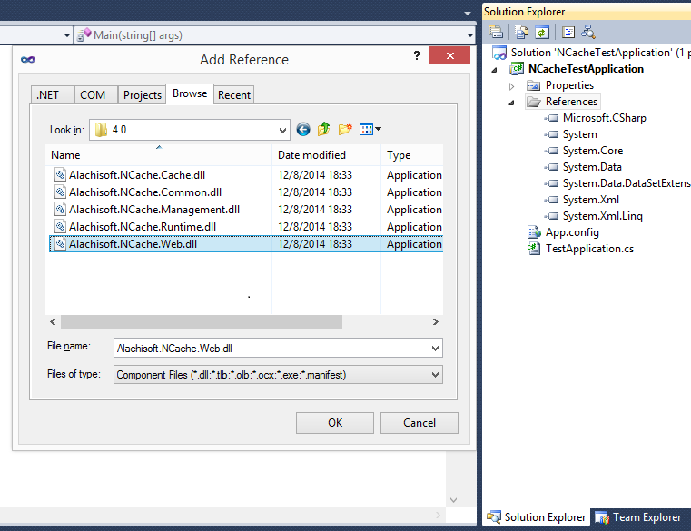
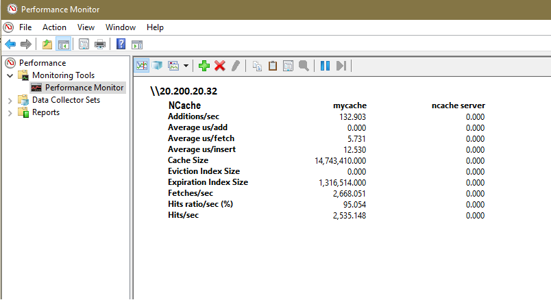

| Alachisoft NCache 4.4 |
Getting
Started Guide
Here are some basic steps you should follow to ensure a smooth installation, configuration, and use of NCache.
NOTE:
If your development environment is Visual Studio 2010, you may not be able to see the NCache .NET assemblies in the "Add Reference" dialog box under ".NET" tab. However, you can add reference to the NCache assemblies by using the "Browse" tab. You can find all these assembly files in [NCache Installed folder]/bin/assembly/

Install NCache on all remote client and cache server machines.
If you have a separate caching tier, you’ll have remote clients. Otherwise,
cache will be hosted on your application server.
You can install either 32-bit or 64-version of NCache. 64-bit cache servers work fine with 32-bit clients.
If there is a firewall between your remote clients and the cache servers, then you must open a TCP port (default 9800) for the remote clients to talk to the cache servers. If you want to change this from 9800 to another port, then you must make changes in all remote client and all cache
server machines. On the remote clients, you need to change the “port” value in “client.ncconf” as following:
<configuration>
<ncache-server port = "9800" client-request-timeout = "90" connection-retries = "1" retry-interval = "0" connection-timeout = "5"/>
</configuration>And, you need to change the “NCacheServer.Port” value in “Alachisoft.NCache.Service.exe.config” file located in “NCache/bin/service” folder on all
cache servers as following:
<appSettings>
...
<add key="NCacheServer.Port" value="9800" />
...
</appSettings>
NOTE: Anytime you modify “Alachisoft.NCache.Service.exe.config”, you must restart
NCache Service (as described above).
All remote clients by default talk to NCache servers on TCP
port 9800. So, if there is a firewall between the remote clients and the cache
server, then you must open TCP port 9800 in your firewall.
If you have a situation where there is a firewall between the cache servers and the cluster must be formed across this firewall, then you must open at least two TCP ports (bi-directional) in this firewall. This port is the
Cluster Port: 7800
Port Range: 1
Open ports 7800. If
You can choose to
create one of the following types of caches:
For starters, we recommend that you create a Replicated
Cache. Later, you can decide whether a different caching topologies meets you
needs better. For now, we want to go through the entire process quickly.
NCache provides remote client management through Command Line tools. On right clicking the Client Nodes node as shown in figure, context menu appears having “Add Node” option. Using this option you can add and configure a single or multiple client nodes in a clustered cache.
Whether you’re using NCache for ASP.NET Sessions or for object caching, you must ensure that all .NET objects are serializable. This is true even for those .NET objects that you’re storing in your Session. Here is how to ensure that:
[Serializable]
class Product
{
...
}
If you’re using NCache for ASP.NET Sessions, you need to modify your “web.config”. For .NET 1.1, you need to specify an HttpModule (see online help and “samples” for example). And, for .NET 2.0 or later, you need to add a custom Session
State Provider (SSP) to your “web.config” as following:
<compilation
defaultLanguage ="c#" debug="true" >
<assemblies>
<add assembly="Alachisoft.NCache.SessionStoreProvider,
Version=4.4.0.0,Culture=neutral,
PublicKeyToken=1448E8D1123E9096" />
</assemblies>
</compilation>
Please make sure that “Version” above reflects the correct version of NCache.
<sessionState cookieless
=
"false"
regenerateExpiredSessionId = "true" mode
= "Custom"
customProvider =
"NCacheSessionProvider"
timeout = "20">
<providers>
<add
name = "NCacheSessionProvider" type
= "Alachisoft.NCache.Web.SessionState.NSessionStoreProvider" sessionAppId
= "NCacheTest"
cacheName = "myTestCache"
writeExceptionsToEventLog = "false"/>
</providers>
</sessionState>
Please read online help for more details on each of the above properties. For now, just make sure that cacheName="myTestCache" reflects name of the cache you’ve created.
You’re now ready to run your application. Once you do, you can watch the cache performance from the Perfmon Counter. Below is an example:
